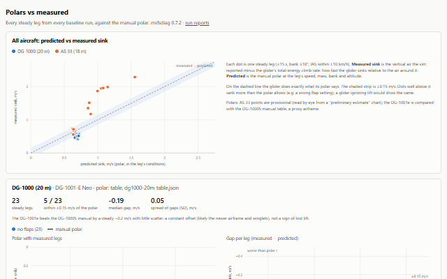
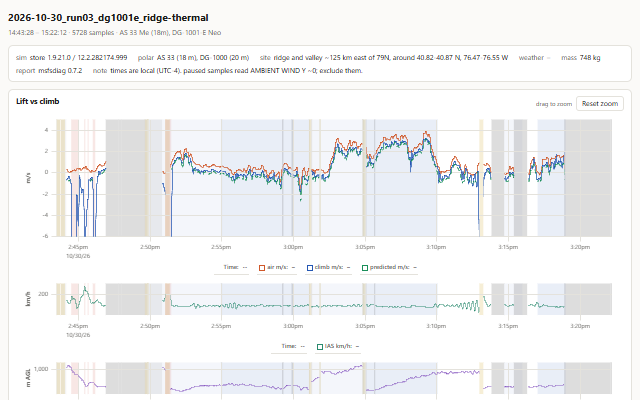
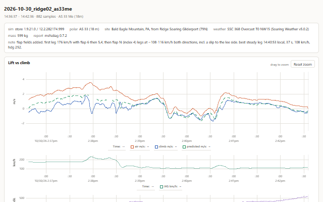
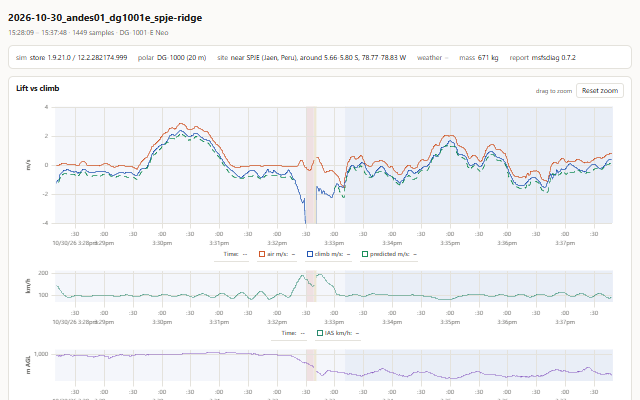
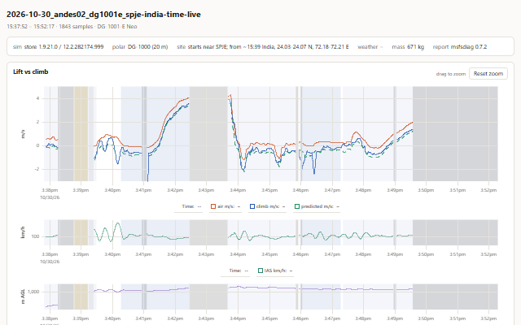
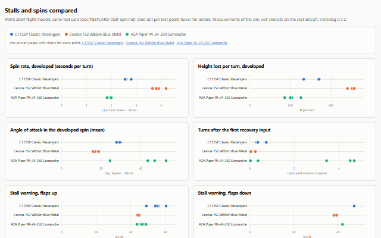
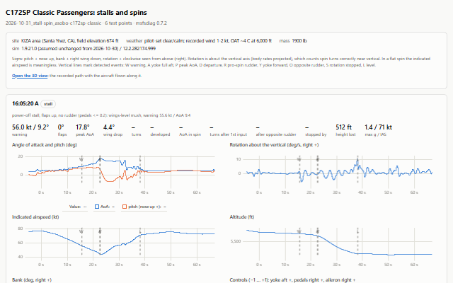
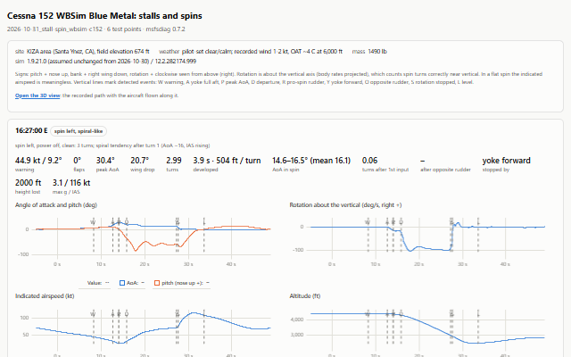
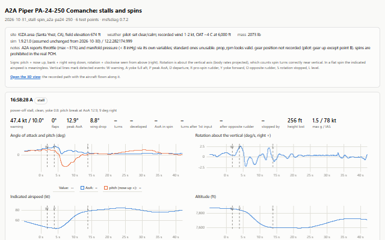
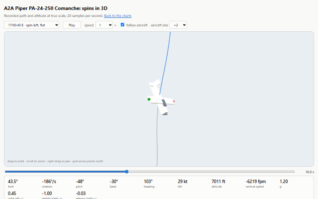

msfs-diagnostics
Recording MSFS 2024 over SimConnect and comparing what the aircraft does with what it should do. Each page below is a single self-contained file (data and charts inside) that also works offline.
Gliders: is the lift reaching the glider?
After SU7, thermals and ridge lift seemed to stop working. The sim's reported vertical air, the glider's total-energy climb and its published polar say otherwise: both gliders climbed as their polars predict, and the problems traced to setup (flap position, a lee-side wind) and a misleading visualization.

Polars vs measured
All 37 steady legs from every run against the manual polars, per aircraft and combined. Start here.

DG-1001e: ridge, cumulus and thermals
One 40-minute session in five weather setups. Ridge lift, cumulus lift and default thermals: the climb line tracks the polar prediction throughout. Includes the pass where the thermal visualization vanished ~1 km before its apparent centre (pause markers), and a climb from 250 m to 900 m above ground.

AS 33 Me: ridge lift and the flap lesson
Bald Eagle Mountain, PA. The first two minutes fly 175 km/h with the flap lever at 6 (landing range): the glider climbs ~1 m/s less than predicted, which looked like 'lift not working'. After moving to flap N at ~110 km/h, climb and prediction overlap.

DG-1001e: Andes slope, west wind vs east wind
Near SPJE, Peru. The same slope with the original west wind is the lee side: −0.4 to −1.4 m/s of sinking air. Switching the preset to an east wind turns it into ridge lift of +0.5 to +2.1 m/s. This explained the 'no lift, very low' flights that started the investigation.

DG-1001e: sim clock, real clock and Live weather
India at sim noon while it was 1 am there in real life: +4 m/s cumulus lift with a preset. Live weather (real night-time atmosphere) gave almost none, even with the sim clock at noon. Applying the preset again brought the lift back within a minute.
Stalls and spins: three flight models, one test card
The C172SP Classic, WBSim C152 and A2A Comanche 250 flown through the same stalls and spins at 60 Hz. The C172 spins steep and stops on forward yoke, the C152 drifts into a spiral, the Comanche spins fast and flat and needs opposite rudder.

Stalls and spins: C172, C152 and Comanche compared
Second project: the same stall/spin test card in three aircraft, recorded at 60 Hz. Spin rate, height per turn, AoA in the spin, and what it takes to stop the rotation.

C172SP Classic: stalls and spins
Wings-level mush in the clean stall; a steep spin at 2.5-2.8 s per turn that stops as soon as the yoke goes forward.

WBSim C152: stalls and spins
A clean pitch break; clean spins drift into a spiral (AoA ~16°, airspeed and g climbing). One full-flap entry rolled against the rudder.

A2A Comanche 250: stalls and spins
Wing drops of up to 92° at the break; a fast, flat spin (~2 s per turn, AoA 44-53°) that keeps going with the yoke eased and stops only with opposite rudder.

Spins in 3D: the Comanche's flat spin
The recorded path with the aircraft flown along it at true attitude. Play, scrub and orbit. Every aircraft page links its own 3D view.
Documentation
Markdown in the repository, rendered by GitHub.
README.mdGuideRecording, markers, keeping runs, reading every report.doc/GUIDE.mdTelemetry formatEvery recorded field, units, sign conventions and quirks.doc/TELEMETRY.mdStall/spin test cardThe profile flown in every aircraft.doc/TESTCARD-stall-spin.mdGlider investigation planHypotheses, decision tree, phases.design/PLAN.mdStall/spin planWhat we compare, phases, risks.design/stall-spin/PLAN.mdWorklogFindings and caveats, session by session.design/WORKLOG.mdDataManual sources, polar file format, baselines by sim build.data/README.mdFor AI agentsCommands, rules, live-session workflow, gotchas.AGENTS.md